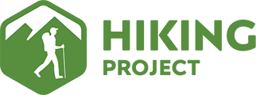

Reasons for Taking Class: I am taking this class because I enjoy taking
skills and application based classes. I and am excited to better my coding
skills while learning about web design. I really enjoeyed surveillance culture
and am thinking of becoming a dig studies minor.
Previous Experience: I do not have experience creating content for the web... aside from the
occasional instagram post, although i'm betting that is not what you are going
for here. I do have some previous programming experience. I took bioinformatics
which is CSC 121 but with bio related homeworks. Our final project was to
create an app. I also took biostats which uses R.
My Goals for the Course:
- understand the process of designing a website
- feel confident in my ability to code in the languages we learn
- develop creatively
Projects I consider Interesting:

- Hiking project - https://www.hikingproject.com/. Also an app, this
site is remarkable because it lets users find hikes in their area or across
the country. If a route doesn't exist yet, users can input their own.
The site is quite interactive and satisfying with the colors/nature vibe.
I enjoy hiking and like it for the usability and accessibility.
They assure users their website is safe to use:
"We review every trail, route, photo and symbol that gets submitted.
We recognize the importance of displaying only accurate and legal trails
which helps to keep folks on track and protect the places we all love to play."
- Diversify EEB - https://diversifyeeb.com/. I learned about this project in
Ecology this week. On this site, people from underrepresented groups can
sumbit their publications and get added to a database. Others can use the
database to interact with and promote science from diverse groups. This is
especially culturally relevant given lack of representation of minority
groups in science.
- MapMyRide - https://www.mapmyride.com/us/. Although everytime
I use this app I think of discussions we had in surveillance culture, it is quite
useful for tracking mileage when exercising. I like the visuals and graphs
it provides to compare variations and total mileage throughout the week.